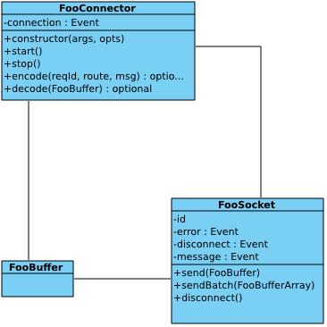

When communicating with the clients, pomelo currently provides hybridconnector and sioconnector. Hybridconnector supports tcp and websocket while sioconnector supports socket.io. But in practice, we may need to customize our own connector to meet special demands, pomelo provides the interface to customize connector, This document will illustrate it.
There are two connector implementations of pomelo: sioconnector and hybridconnector, here we use sioconnector as an example to to explain how to implement a connector for pomelo. First, the constructor function of sioconnector takes three arguments host, port, opts, and (host, port) is used to make socket bind and listen. In calling of sioconnector.start, it will listen on port, and bind socket events to proper event handler. When a connection event occurs, it will bring a communication socket that is a SioSocket. When clients disconnects from this communication socket, sioconnector should catch it and thrown again. When a communication error occurs, pomelo will emit error event and emit message event if receiving a message from clients. Pomelo uses decode function provided by connector to decode the message when receiving a message from clients. For request message from clients, which reported to the application layer should be formatted as follows:
{
id: <requestId>,
route: <handlerRoute>,
body: <requestBody>
}
id is an identifier of client request, it is generated by the client and is unique within a session. If the message is is not a request but a notify, id should be null. route indicates the location of the service for that request, it is formatted as ". . ". body carries specific request parameter, which is used when handling the request.
For messages sent to clients by servers, it may be a pushing message or a response, it uses encoder provided by the connector to package the message, the encoder's signature is shown as follows:
encode (reqId, route, msg);
If it is a response, reqId is the corresponding request id, route is route that the original request carries and can be omitted, msg is the response content;
If it is a pushing message, reqId will be a null value, route indicates client's route, which is formatted as "on", msg is the pushing message content.
The encoder should return a buffer that can be sent by socket directly.
Encode/decode can also be configured when configuring connector component, and if it is configured encode/decode for connector component, it will replace the connector's encode/decode method. So it's a good mechanism to customize encode/decode method.
Connector should also provide stop method, for sioconnector, it stops listening socket connection in its stop method.
After analyzing sioconnector, we have an abstraction of connector for pomelo.
When illustrating communication between client and server, it often makes an analogy to tcp communication pattern, so does our connector abstraction. Here, we assume to implement FooConnector:
First, FooConnector class is required, constructor of FooConnector requires some arguments, which is used to create a connection listening, of course, the typical is (host, port) pair, but for some of the specific connector, they need may be not (host, port) pair, such as share memory or named pipe.
FooConnector has start method, In start method, it should start to listen connection from clients, this operation is analogous to listen call for tcp. It also installs handler to connection event. When a client connects to, the connection event is emitted with a FooSocket, and it is analogous to accept call for tcp.
FooSocket is analogous to communication socket which is returned from accept call for tcp. FooSocket may emit error event when a communication error occurs, disconnect event will emit when client disconnect from server, and when received message, message event should be emitted with a FooBuffer that holds the message. It is required to install handlers to these events.
FooBuffer is analogous to byte array for tcp. For javascript language, FooBuffer is usually string or Buffer. Of course, developers can also customize their own buffer type. Note that once a message event emitted, the FooBuffer it carries should hold a complete package, a half-package or stick packages would be an error. Only stream protocol similar to tcp may have problems about half package or sticky package, Datagram-based protocol such as UDP have no these problems.
Connector also need to provide a decode method, the decode method is used to decode the FooBuffer to a request object that application layer can directly use. that means the return value of decode function should be an object in the following format:
{
id: <requestId>,
route: <handlerRoute>,
body: <requestBody>
}When sending pushing message or response, connector should provide encode method to package the pushing message/response to FooBuffer that can be sent by underlying FooSocket. the encode method's signature should be:
encode(reqId, route, body);
If it is a pushing message, reqId should be null.
As we can define encoder/decoder, so we can design customized wire-protocol that should be consistent between client-side and server-side.
A send method is required for FooSocket to send FooBuffer to clients, its signature is:
send(FooBuffer);
In practice, It would not send the message immediately once a message is generated, but buffer it first and then send periodically. It is suitable to cases in which a large number of small packets is generated. So FooSocket should provide a batch send method to send more than one messages once a time. Its signature is:
sendBatch(FooBufferArray);
If the underlying protocol is binary, you can concatenate all the FooBuffers as a bigger one while packaging FooBufferArray, for example, hybridconnector uses this approach due to hybridconnector using binary protocol. but for sioconnector, since its underlying protocol is json, so it groups these message to a json array.
FooSocket should also provide disconnect method, which can be used to kick a client off by server.
At last, FooConnector should provide stop method, which can be used to close listening for connection, it can be analogous to close call for tcp listener socket.
According to the analysis above, we conclude some classes that is related to connector implementation, Here is a class diagram shown as follows:

app.set ('connectorConfig', {
connector: FooConnector,
encode: <encode func>, // optional
decode: <decode func>, // optional
<others>: <others>
}) ;It should be pointed out that if encode/decode options is not omitted,it will be preferent to be used to encode/decode messages, otherwise, it will use encode/decode provided by the connector. Here connector option is configured to FooConnector, which is factory function for FooConnector, pomelo will constructes a FooConnector instance in the following way:
new FooConnector (host, clientPort, opts);If the bind address of the customized FooConnector is not (host, port) pair, then you can configure the connector option to a FooConnector instance in the following way:
var conn = new FooConnector (<addr_args>, opts);
app.set('connectorConfig', {
connector: conn,
//....
});This document illustrates how to implement a customized connector for pomelo, the connector abstraction is given, and it introduces what should be done when implementing a new connector. Developers can customize their own connector to support various transport protocols.